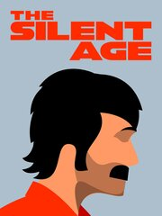

The Silent Age
The Silent Age
Details
|  | |
| Playtime | Not Played |
| Last Activity | Never |
| Added | 8/19/2023 14:50:25 |
| Modified | 8/19/2023 18:56:06 |
| Completion Status | Not Played |
| Library | Steam |
| Source | Steam |
| Platform | PC (Windows) |
| Release Date | 2/21/2013 |
| Community Score | 71 |
| Critic Score | 70 |
| User Score | |
| Genre | Adventure Indie Point-and-click Puzzle Role-playing (RPG) |
| Developer | House on Fire |
| Publisher | House on Fire Meridian4 |
| Feature | Single Player |
| Links | Official Steam Android iPhone iPad GOG Itch Wikipedia Epic Discord YouTube Twitch |
| Tag | |
Description
Embark on an epic adventure through time with Joe, a simple janitor tasked with saving humanity from extinction. With the help of a mysterious time travel device, explore the groovy present of 1972 and the post-apocalyptic future of 2012, solving puzzles and uncovering the truth behind mankind's demise.

Featuring a deep storyline, challenging puzzles, and minimalist art style, The Silent Age is an unforgettable gaming experience. Can you, a seemingly ordinary Joe, rise to the challenge and become the hero humanity needs? Play now to find out.
https://store.steampowered.com/app/352520/The_Silent_Age/
Featuring a deep storyline, challenging puzzles, and minimalist art style, The Silent Age is an unforgettable gaming experience. Can you, a seemingly ordinary Joe, rise to the challenge and become the hero humanity needs? Play now to find out.
- Discover a world of adventure with immersive character voiceovers and captivating storytelling.
- Be awestruck by the bold, stylish artwork presented in stunning Ultra HD.
- Engage in a thrilling adventure with a deep, engaging story that will keep you hooked from start to finish.
- Meet a cast of complex characters, each with their own unique personalities and agendas.
- Challenge your mind with clever puzzles that require time travel and clever item use to solve.
- Enjoy a seamless, intuitive interface that makes you feel like you're part of the action.
- Explore 10 exciting chapters filled with unique locations, characters, and puzzles to solve.
https://store.steampowered.com/app/352520/The_Silent_Age/